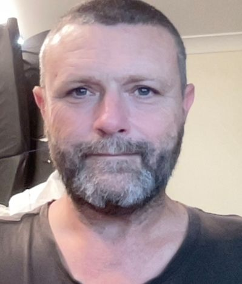

About
Brett Grentell

Direction
The starting point of any design project is developing a deep understanding of the brief and the client’s needs. This includes identifying the project goals and functional requirements. Ultimately, this approach ensures that the final design is not only visually appealing but also functional and effective in achieving the desired outcomes.
Design
The most important part of my design approach involves identifying the appropriate mood and tone that aligns with each project’s unique characteristics. From there I aim to synthesise various design concepts and versions to identify the most suitable solution.
Interaction
In my design work, I place a strong emphasis on incorporating motion and interaction. I believe that these elements are essential in creating a satisfying and engaging experience for the audience. Even a small, subtle motion or micro-interaction can significantly improve the overall experience and leave a lasting impression on the user.